少儿国画启蒙
认识笔墨纸砚，学会握笔和蘸墨；以团扇萌鸟、雏鸡、柿子、小鱼这类可爱小品为范画，每节课完成一幅作品，在玩中感受水墨的趣味。
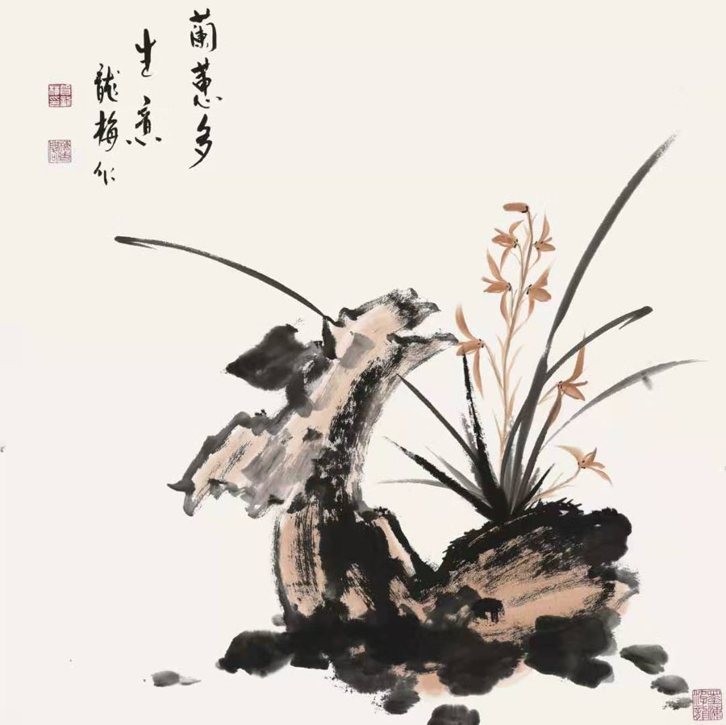
以笔墨启童心，
在趣味中感受国画之美。
主攻写意花鸟，研修于中国人民大学艺术学院，2021 年起在新加坡教授国画小班、参与社区挥春公益。我希望用简单、有趣的方式，把笔墨之美带给每一位学习者。
He Longmei · Chinese ink painting teacher based in Singapore, specialising in freehand bird-and-flower painting.
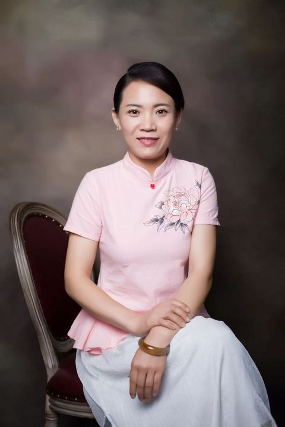
我主攻写意花鸟画，喜欢用简练的笔墨画出花草禽鸟的生气与趣味。
2017 年，我进入中国人民大学艺术学院中国书画高级创作研修班深造，师从李天旭先生（霍春阳先生关门弟子），系统研习写意花鸟。从临摹到创作，一笔一墨打下了扎实的传统功底。2019 年，我受邀参加北京吴东魁艺术馆举办的李天旭师生国画作品邀请展，参展作品与展览报道至今可在网上检索查阅。
2021 年定居新加坡后，我开设国画小班，为本地学员现场示范、分步讲解；每年春节参与社区和庙宇的挥春公益，为街坊写春联、写福字。2025 年，我参加了新加坡新城书画学会三十周年美展。
写意花鸟讲究“以形写神”，用最少的笔墨表现最多的生机。我作画常从观察入手：先看花叶的姿态、禽鸟的神情，再用浓淡干湿的墨色和几笔点染，把它们留在纸上。我喜欢传统题材的雅致，也喜欢在画里加入明快的色彩和一点童趣，让看画的人一眼就觉得亲切。
书法是我另一份长久的爱好。我坚持硬笔与毛笔并行，长期练习楷书和行书。书画同源，中锋用笔、布白章法这些书法功夫，正是写意画的根基，也是我教学时最看重的基本功。
多年的教学与公益经历让我相信：国画不只是一门技法，更是一种看世界的方式。我希望把传统书画讲得通俗、教得有趣，让不同年龄的学习者，尤其是孩子，都能轻松拿起毛笔，感受水墨的东方韵味。
李天旭先生是当代写意花鸟名家霍春阳先生的关门弟子。在研修班中，我在先生指导下系统研习写意花鸟画，课程涵盖国画理论、笔墨技法与花鸟题材专项创作。
这段系统的学习，让我的写意花鸟从“会画”走向“能创作”，也让我学会了如何把一套技法讲清楚、教明白，这正是我后来教学的基础。


从北京到新加坡，我的作品先后在研修班毕业作品展、北京吴东魁艺术馆邀请展和新加坡新城书画学会三十周年美展中展出。每一次参展，都是一次向同道学习、检验自己笔墨的机会。
2025
定居新加坡后，携两幅彩墨中堂参加新城书画学会三十周年美展，与本地书画同道同场展出：《幽谷秋艳鹊相依》以红叶、蓝鹊、山石溪流入画，《报晓》画旭日云海下立于石上的雄鸡。两幅作品延续写意花鸟题材，在传统笔墨中加入明快的色彩。


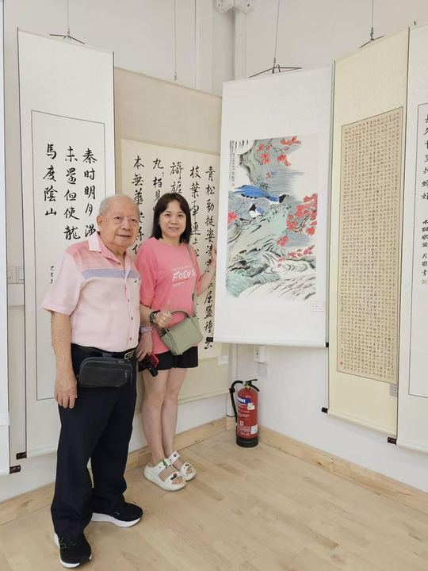


2019
师从李天旭先生期间受邀参展，展出写意花鸟作品，题材涵盖荷塘、翠竹、雏鸡。展览报道与参展作品可在网上检索查阅。


结业
研修结业时，作品参加研修班毕业作品展，记录了系统研修阶段的学习成果。
我在新加坡开设写意花鸟国画小班。小班人数少，我可以在每位学员身边现场示范，看着他们下笔，及时纠正握笔和运笔，因材施教。
我熟悉由浅入深的国画启蒙教法：把复杂的技法拆成小步骤，用学生喜欢的题材增加趣味，这套方法同样适合小学生的国画启蒙课堂。
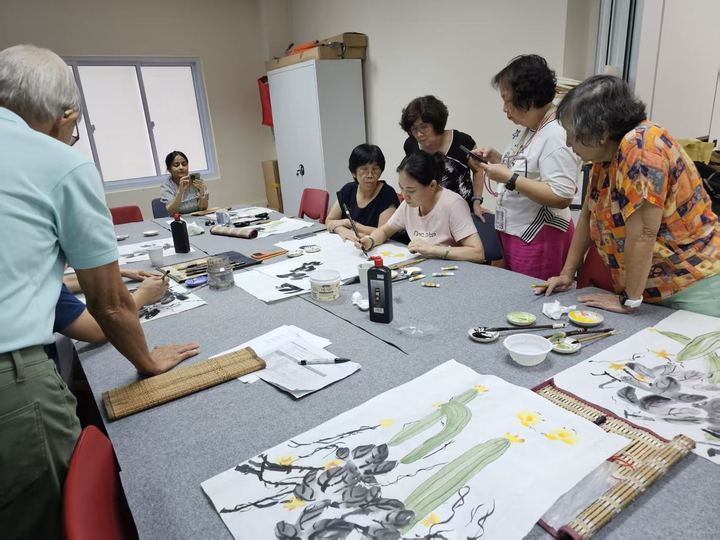
团扇萌鸟、雪柿麻雀、雏鸡玉米这类色彩明快、造型可爱的小品，笔画少、成就感强，孩子一节课就能完成一幅作品，特别适合作为少儿国画启蒙的临摹范画。

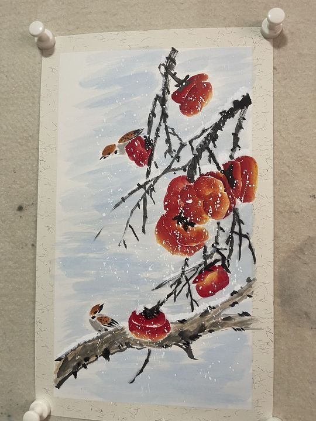


结合我的创作与教学经验，我可以为学校、培训中心和社区开设以下课程，课时和内容都可以按需要调整。
认识笔墨纸砚，学会握笔和蘸墨；以团扇萌鸟、雏鸡、柿子、小鱼这类可爱小品为范画，每节课完成一幅作品，在玩中感受水墨的趣味。
从兰、竹等基础笔法入门，逐步过渡到牡丹、紫藤、禽鸟等完整构图；每节课先示范再练习，并在课上逐一点评、个别指导。
硬笔侧重笔画规范与字形结构，毛笔从楷书入手练习中锋控笔，可单独开课，也可与国画课程结合。
春节写春联、写福字，结合节令题材画一幅小品，让学生在动手中了解传统节日与书画文化，适合学校华文周、文化日和社区活动。
每到春节，我会到新加坡的社区、乐龄中心和庙宇参加挥春活动，现场书写春联和福字，送给街坊邻里，也和不同年龄的民众分享中华传统书画文化。
挥春是新加坡华人社会延续多年的新春传统。每一副春联、每一个福字都写给素不相识的街坊，看到长者把福字小心卷好带回家，孩子围在桌边看我写字，我很感动，这也是我坚持每年参加的原因。
常年的公益实践让我练就了良好的表达能力、耐心与亲和力。面对第一次拿毛笔的长者和孩子，我也能用最简单的话，把书画的乐趣讲清楚。


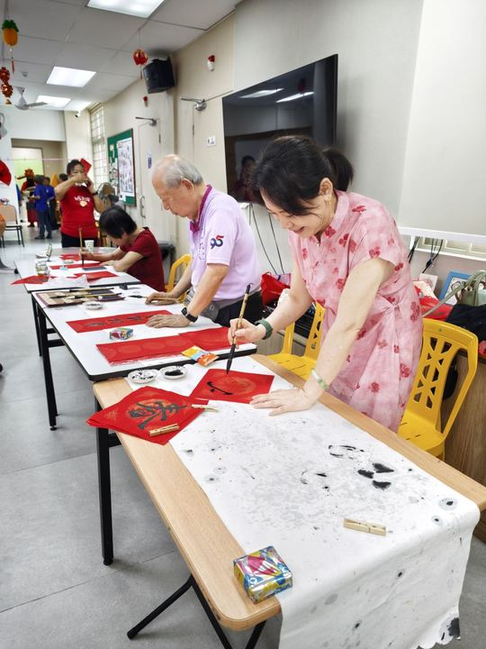
写意花鸟是我创作的核心。我的作品既有牡丹、雄鸡、紫藤、荷塘、蓝鹊这类传统题材，也有团扇萌鸟、雪柿麻雀、雏鸡这样色彩明快、造型可爱的小品。点击图片可以放大查看。
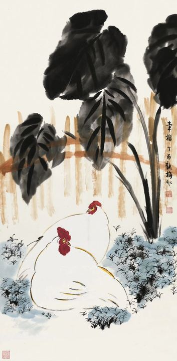

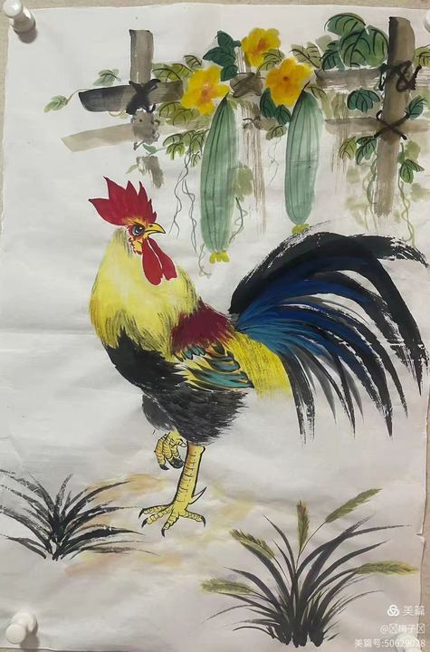
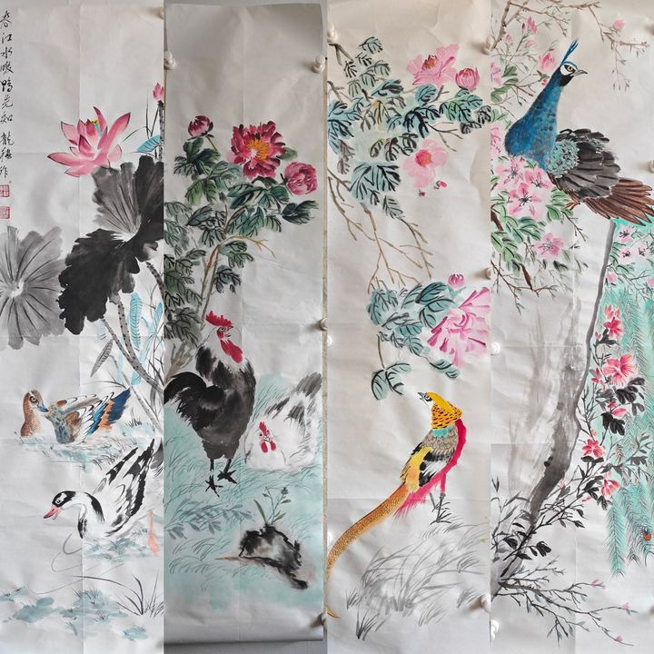
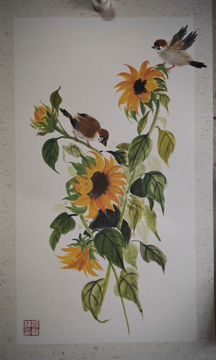

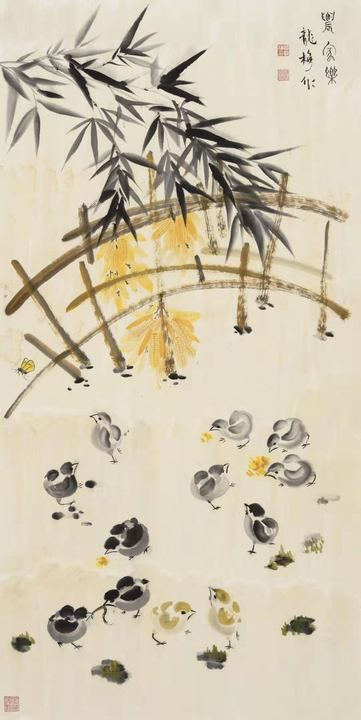
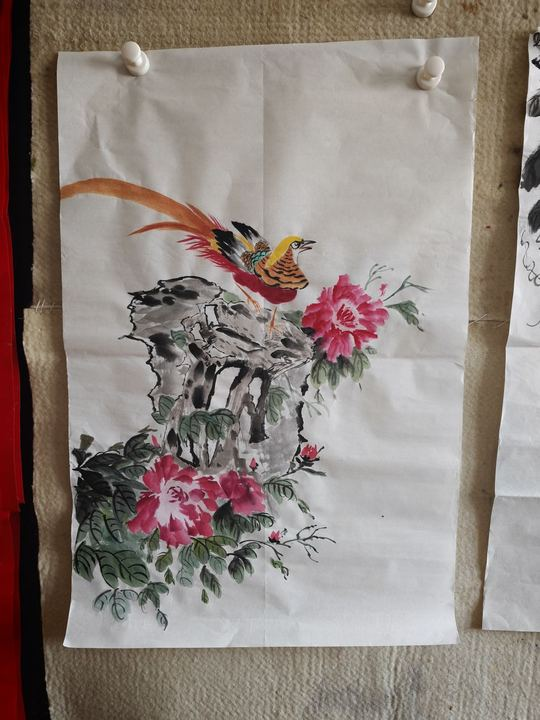


我爱好硬笔与毛笔书法，长期练习楷书和行书。硬笔侧重笔画规范与字形结构；毛笔注重中锋控笔与笔法锤炼。书法是国画的根基，也让我可以同时开展书法基础启蒙教学。
每年春节的挥春活动，正是我把书法练习用在生活里的时候：一副春联、一个福字，写的是功夫，送出去的是祝福。


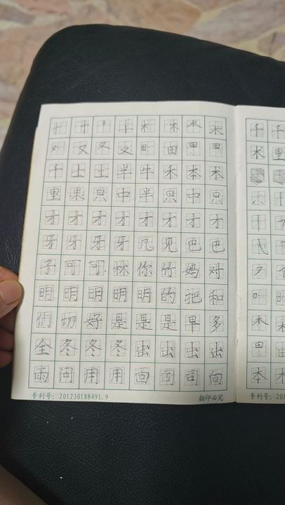
愿以笔墨为引，
陪伴孩子感受国画独有的东方韵味。
欢迎学校、培训中心和社区机构与我联系，商讨国画、书法课程或文化活动的合作。
Open to Chinese ink painting and calligraphy teaching roles in Singapore — schools, enrichment centres and community classes.